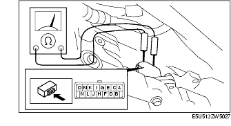

Workshop Manual ➭ TRANSMISSION/TRANSAXLE ➭ AUTOMATIC TRANSMISSION[SJ6A-EL] ➭ SOLENOID VALVE INSPECTION [SJ6A-EL]
SOLENOID VALVE INSPECTION [SJ6A-EL]
id051311253200
{: #wp1059780}
Caution
• Water or foreign material entering the connector can cause poor connections or corrosion. Be sure that water or foreign material do not enter the connector when disconnecting it. {: #wp1062919}• Do not damage the terminals.
Resistance inspection (On-vehicle)
-
Remove the battery cover.
-
Disconnect the negative battery cable. (See BATTERY REMOVAL/INSTALLATION [L8, LF].)
-
Disconnect the solenoid valve connector.{: #wp1059851}
- Measure the resistance between the following terminals.{: #wp1059878}

• If there is any malfunction, inspect the coupler component. {: #wp1059905}• If the coupler component is normal, replace the control valve body. (See CONTROL VALVE BODY REMOVAL [SJ6A-EL].) (See CONTROL VALVE BODY INSTALLATION [SJ6A-EL].)
**Solenoid valve resistance (ATF temperature: 20 °C {68 °F})
+------------------------------+-----------------------------------------------+-------------------------------------+ | Terminals {: #wp1060052} | Solenoid valve {: #wp1060054} | Resistance (ohm) {: #wp1060056} | +==============================+===============================================+=====================================+ | O-GND {: #wp1059970} | Shift solenoid A {: #wp1059972} | 5.0-5.6 {: #wp1060028} | +------------------------------+-----------------------------------------------+-------------------------------------+ | N-GND {: #wp1060075} | Shift solenoid B {: #wp1060078} | 5.0-5.6 {: #wp1060081} | +------------------------------+-----------------------------------------------+-------------------------------------+ | M-GND {: #wp1060085} | Shift solenoid C {: #wp1060088} | 5.0-5.6 {: #wp1060091} | +------------------------------+-----------------------------------------------+-------------------------------------+ | L-GND {: #wp1060095} | Shift solenoid D {: #wp1060098} | 5.0-5.6 {: #wp1060101} | +------------------------------+-----------------------------------------------+-------------------------------------+ | K-GND {: #wp1060196} | Shift solenoid E {: #wp1060199} | 5.0-5.6 {: #wp1060202} | +------------------------------+-----------------------------------------------+-------------------------------------+ | E-F {: #wp1060225} | Shift solenoid F {: #wp1060228} | 5.0-5.6 {: #wp1060231} | +------------------------------+-----------------------------------------------+-------------------------------------+ | C-D {: #wp1060254} | Shift solenoid G {: #wp1060257} | 5.0-5.6 {: #wp1060260} | +------------------------------+-----------------------------------------------+-------------------------------------+ | I-J {: #wp1060283} | Line pressure control solenoid {: #wp1060286} | 5.0-5.6 {: #wp1060289} | +------------------------------+-----------------------------------------------+-------------------------------------+ | G-H {: #wp1060312} | TCC control solenoid {: #wp1060315} | 5.0-5.6 {: #wp1060318} | +------------------------------+-----------------------------------------------+-------------------------------------+**{: #wp1059950}
-
Connect the solenoid valve connector.
-
Connect the negative battery cable. (See BATTERY REMOVAL/INSTALLATION [L8, LF].)
-
Install the battery cover.
Continuity Inspection (On-Vehicle Inspection)
Caution
• Water or foreign material entering the connector can cause a poor connection or corrosion. Be sure not to allow water or foreign material on the connector when disconnecting. {: #wp1062920}• Do not damage the terminals.
-
Remove the battery cover.
-
Disconnect the negative battery cable. (See BATTERY REMOVAL/INSTALLATION [L8, LF].)
-
Disconnect the solenoid valve connector.{: #wp1060452}

- Verify that there is no continuity between coupler component terminals C, D, E, F, G, H, I, J and GND.
• If there is any malfunction, inspect the coupler component. {: #wp1060491}• If the coupler component is normal, replace the control valve body. (See CONTROL VALVE BODY REMOVAL [SJ6A-EL].) (See CONTROL VALVE BODY INSTALLATION [SJ6A-EL].)
-
Connect the solenoid valve connector.
-
Connect the negative battery cable. (See BATTERY REMOVAL/INSTALLATION [L8, LF].)
-
Install the battery cover.